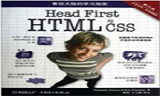
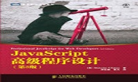

我的关注 善于学习别人的长处，知难而进终会成功。 01-05 2016 《剑指Offer:名企面试官精讲典型编程题》 《剑指Offer:名企面试官精讲典型编程题》剖析了50个典型的程序员面试题，从基础知识、代码质量、解题思路、优化效率和综合能力五个方面系统整理了影响面试的5个要点... 阅读全文>> 01-04 2016 《Head First设计模式》(中文版) 《Head First设计模式》(中文版)共有14章，每章都介绍了几个设计模式，完整地涵盖了四人组版本全部23个设计模式Strategy、Observer、Decorator... 阅读全文>> 01-03 2016 《高效程序员的45个习惯》 本书简明实用、见解深刻，总结了高效程序员在开发过程中的45个个人习惯、思想观念和方法，有助于开发人员在开发进程、编码工作、开发者态度、项目和团队管理... 阅读全文>> 01-02 2016 《Head First HTML与CSS（第2版）》 是不是已经厌倦了那些深奥的HTML书？你可能在抱怨，只有成为专家之后才能读懂那些书。那么，找一本新修订的《Head First HTML与CSS（第2版）》吧，来真正学习HTML... 阅读全文>> 01-01 2016 《JavaScript高级程序设计（第3版）》 本书是JavaScript 超级畅销书的最新版。ECMAScript 5 和HTML5 在标准之争中双双胜出，使大量专有实现和客户端扩展正式进入规范... 阅读全文>>